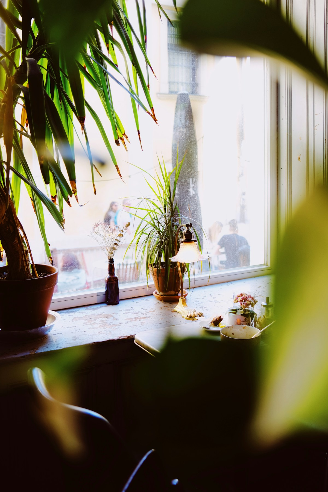
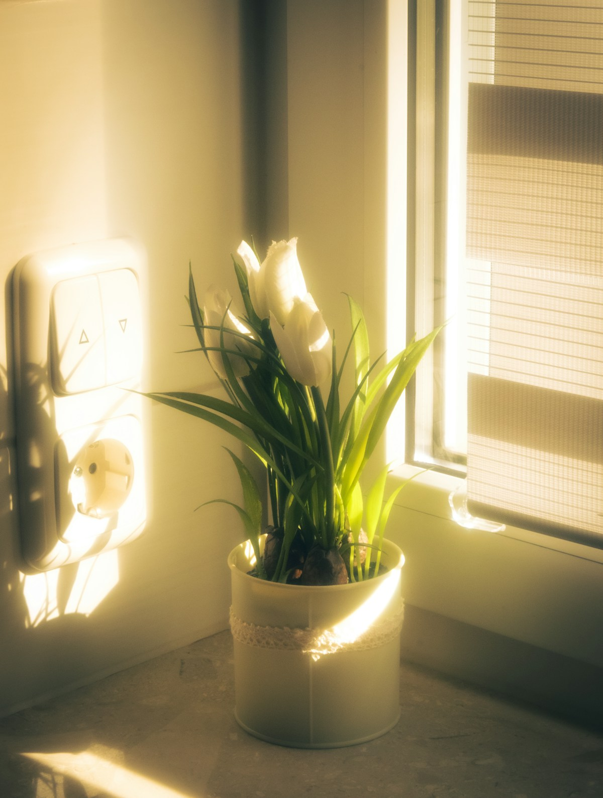
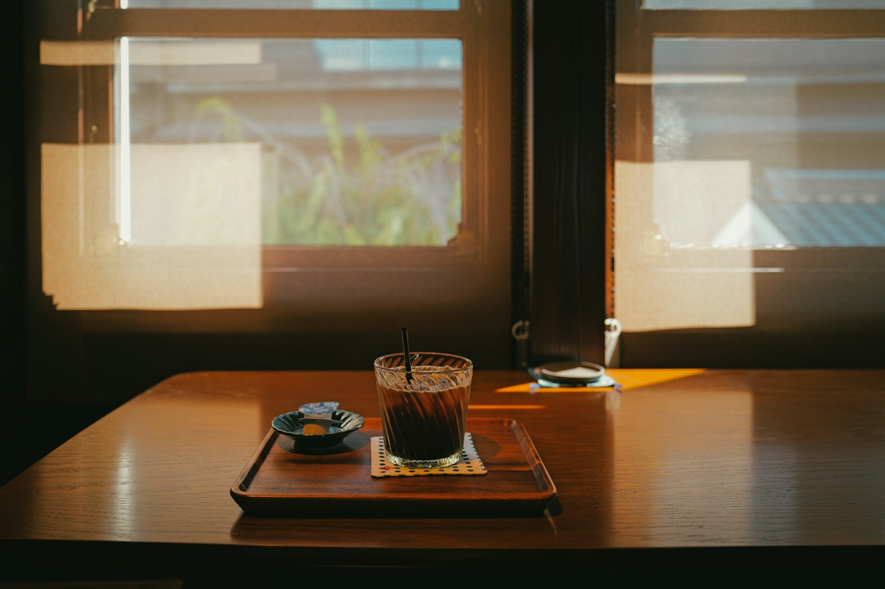

01 / 封面一张照片，建立整册的气质
LAMPY / 生活册

日子里的光
一些寻常的片刻，和一起度过的人。
2026 · OCTOBER
册名来自用户输入；无封面照片时回退为文字封面。示例中照片完整展示。
02 / 章节页用时间和留白完成转场
CHAPTER 01
一些寻常的片刻
十月
2026
一些寻常的片刻，
和一起度过的人。
章节说明复用示例册子的开篇，不由系统编造。没有开篇时只显示月份与年份。
03 / 短文配图生活文集先读文字，影像小册先看照片
下午在窗边坐了一会儿。
阳光落在叶子上，慢慢挪到了桌角。
咖啡凉了，也没急着喝完。
切换后图文主次改变；这是两种编排方向的比较，不自动摘要或改写文字。
04 / 三张照片一大两小，保持照片完整与原顺序
花、咖啡，还有窗边的位置。
把今天喜欢的几个小地方记下来。


示例保留照片原比例。阅读宽度不足或横竖比例不适合并列时，回退为依次单图。
05 / 长文让段落和行距承担阅读节奏
今天没有安排什么特别的事。
早上把窗户打开，外面有一点凉。给花换了水，又把桌上散着的书收好。原本想出门，后来还是留在了家里。
下午接到妈妈的电话。她说院子里的树又长高了一点，邻居送来一袋刚摘的果子。我们聊了很久，好像也没聊什么要紧的事。
挂掉电话以后，天已经暗了。灯亮起来，屋里安静得能听见水壶里的声音。
想把这一天记下来。以后翻到这里，还能想起当时那种不慌不忙的心情。
没有截断、金句提取或虚构标题。实际流式 EPUB 允许内容自然延续到下一页。
06 / 声音记录让声音贴近它所属的生活片刻
窗外下起了小雨。
没有说话，只录下了这一小段声音。
听听当时的声音
演示声音 · 00:06 · 合成轻音合成演示，非用户录音；不自动播放。
预览内可播放六秒合成轻音；实际 EPUB 使用原录音与阅读器原生播放器，外观可能不同。